SDG 14 SUB-GOALS
The Individual Goals set by the UN to drive us towards sustainable ocean life
|
TargetSub-Target Number
|
Sub-GoalTarget Title
|
DescriptionExtra Details about the Target
|
StepsSteps to Achieve targets
|
Target IndicatorsIndicators of the progress of Targets
|
|---|---|---|---|---|
| 14.1 |
Reduce Marine Pollution
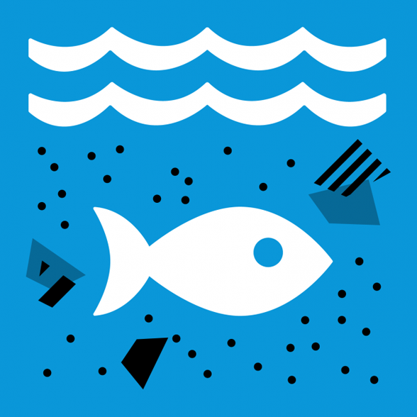
Marine Pollution is directly harmful to Ocean Life
|
Prevent and significantly reduce marine pollution of all kinds, in particular from land-based activities, including marine debris and nutrient pollution | Implement Waste Management Systems and Reduce Plastic Usage | Floating Plastic debris density in protected ecosystems 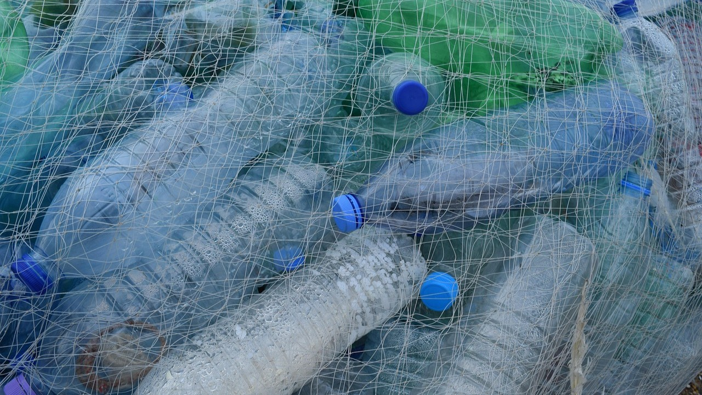 |
| 14.2 |
Protect and Restore Ecosystems
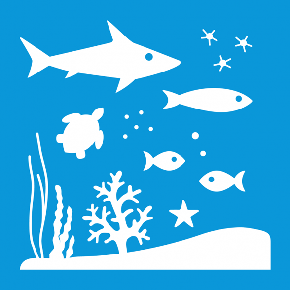
Ocean Life is threatened by the destruction of natural ecosystems
|
Sustainably manage and protect marine and coastal ecosystems to avoid significant adverse impacts, including by strengthening their resilience, and take action for their restoration in order to achieve healthy and productive oceans | Enhance ocean monitoring and support climate change mitigation |
|
| 14.3 |
Reduce Ocean Acidification
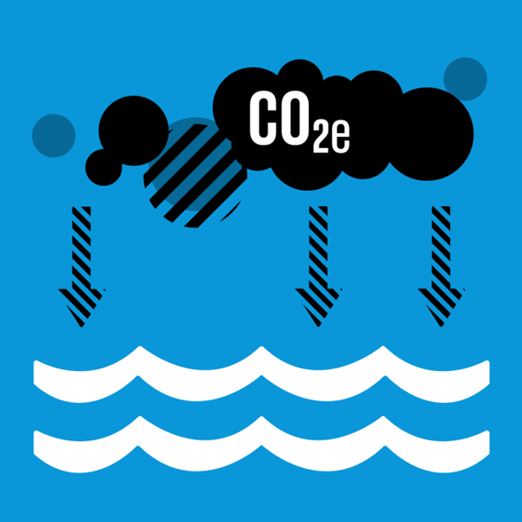
Acidification affects not only Marine Life, but us as well
|
Minimize and address the impacts of ocean acidification, including through enhanced scientific cooperation at all levels | Enhance ocean monitoring and support climate change mitigation | Average marine acidity measured at agreed suite of representative sampling stations 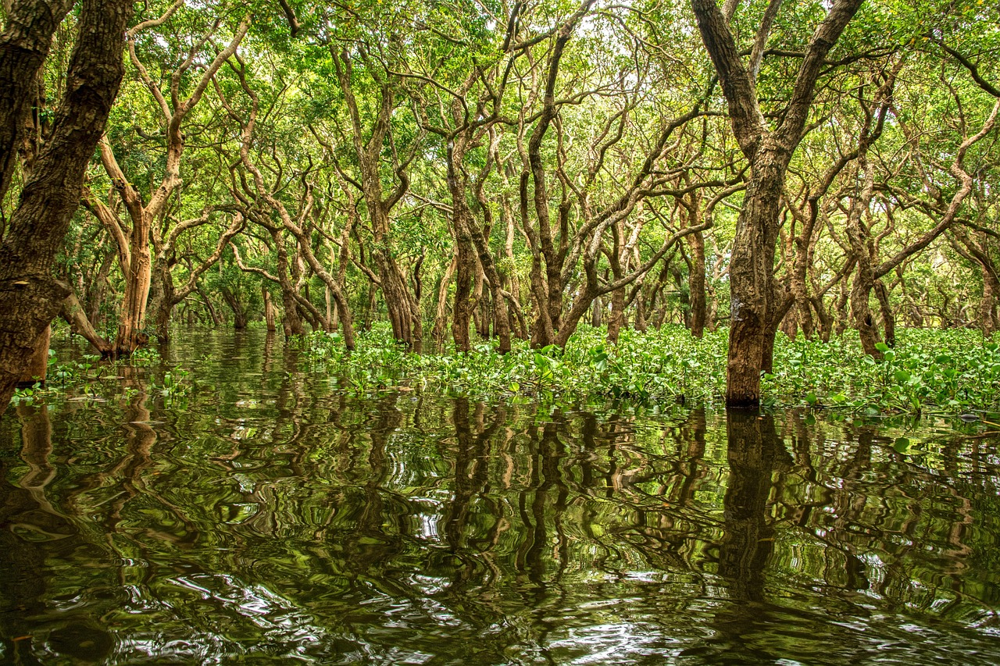 |
| 14.4 |
Sustainable Fishing
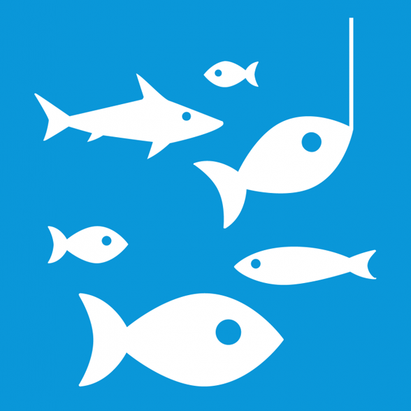
Sustainable Fishing is key to ensuring the health of our home
|
Effectively regulate harvesting and end overfishing, illegal, unreported and unregulated fishing and destructive fishing practices and implement science-based management plans, in order to restore fish stocks in the shortest time feasible, at least to levels that can produce maximum sustainable yield as determined by their biological characteristics | Implement Fishing limits and promote eco-labeling | Proportion of Fish Stocks in biologically sustainable levels 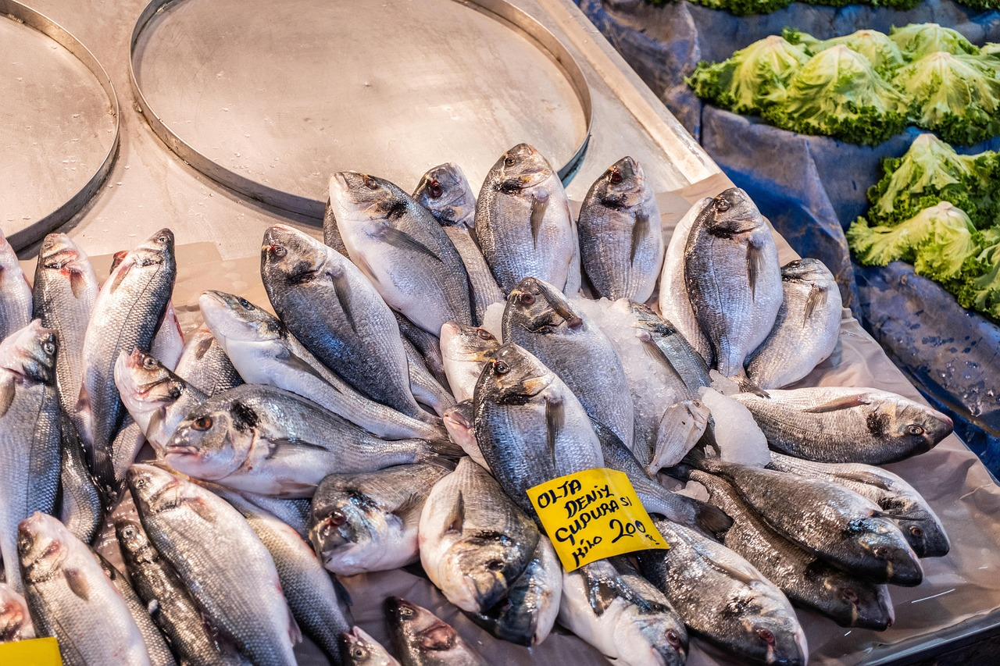 |
| 14.5 |
Conserve Coastal and Marine Areas
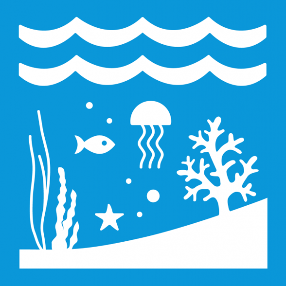
Conservation is the cornerstone of any sustainability project
|
Conserve at least 10 per cent of coastal and marine areas, consistent with national and international law and based on the best available scientific information | Expand Marine protected areas and engage local communities | Coverage of protected areas in relation to marine areas 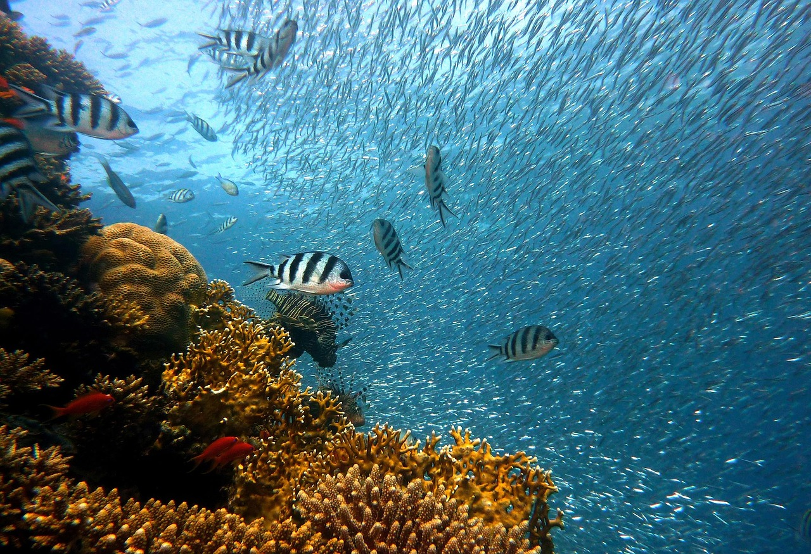 |
| 14.6 |
End Subsidies Contributing to Overfishing
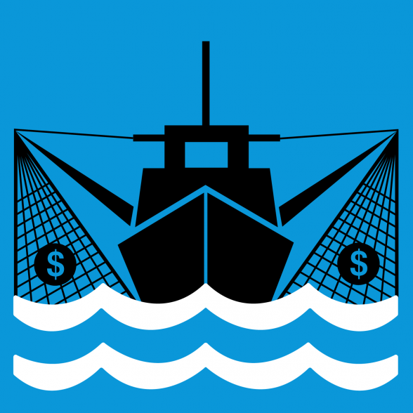
Eradicate incentive to fish unsustainably
|
Prohibit certain forms of fisheries subsidies which contribute to overcapacity and overfishing, eliminate subsidies that contribute to illegal, unreported and unregulated fishing and refrain from introducing new such subsidies, recognizing that appropriate and effective special and differential treatment for developing and least developed countries should be an integral part of the World Trade Organization fisheries subsidies negotiation | Implement monitoring to minimize over-fishing | Progress by countries in the degree of implementation of international instruments aiming to combat illegal, unreported and unregulated fishing 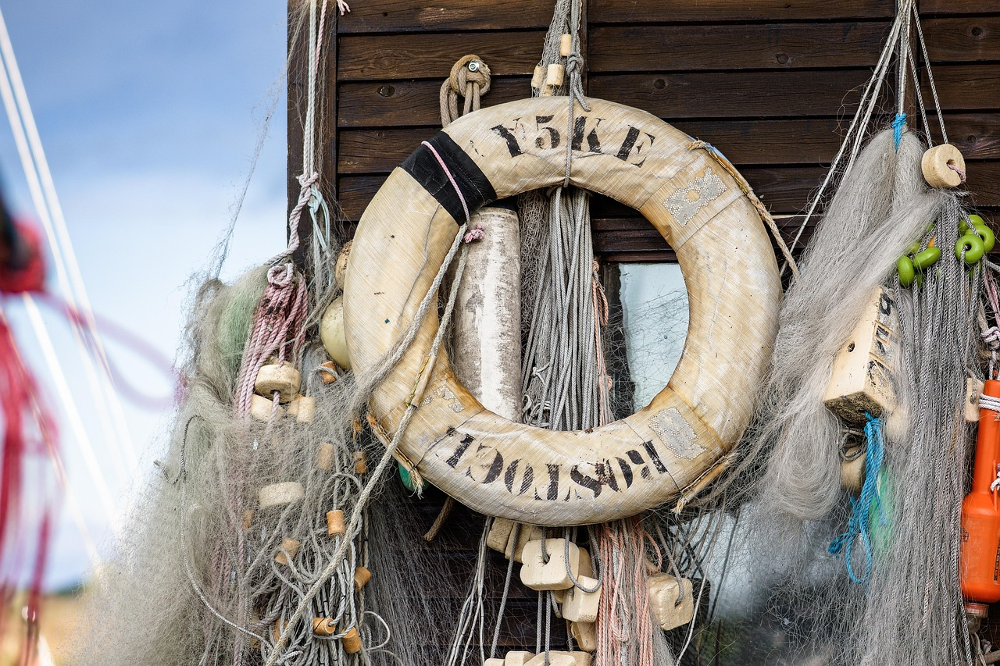 |
| 14.A |
Increase Scientific Knowledge, Research and Technology for Ocean Health
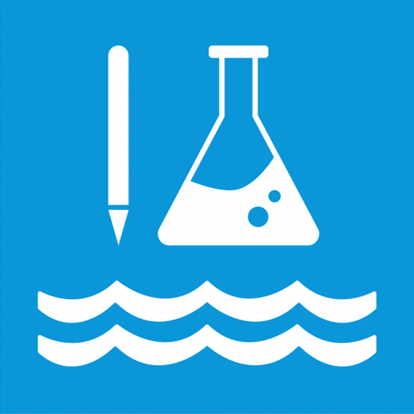
Knowledge is Power
|
Increase scientific knowledge, develop research capacity and transfer marine technology, taking into account the Intergovernmental Oceanographic Commission Criteria and Guidelines on the Transfer of Marine Technology, in order to improve ocean health and to enhance the contribution of marine biodiversity to the development of developing countries, in particular small island developing States and least developed countries | Fund Oceanographic Research and develop marine technology | Proportion of total research budget allocated to research in the field of marine technology 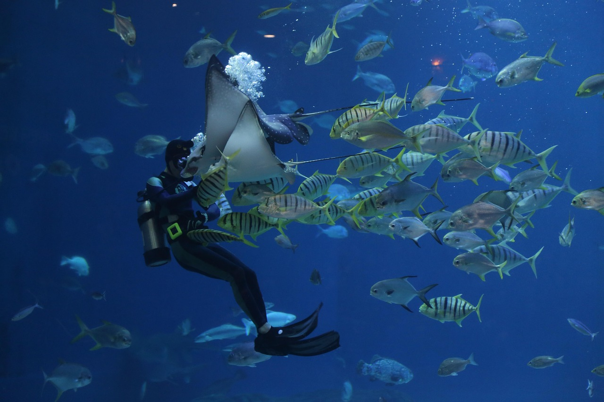 |
| 14.B |
Support Small Scale Fishers
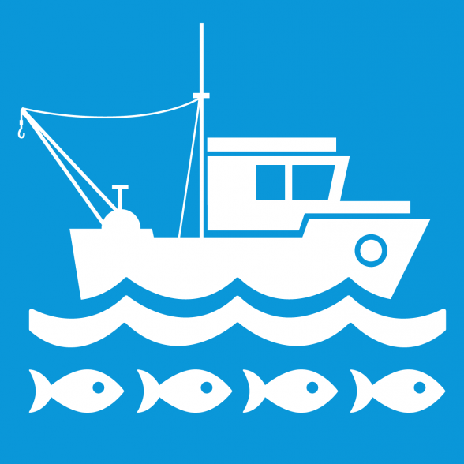
SDG 10 is reduce inequalities!
|
Provide access for small-scale artisanal fishers to marine resources and markets | Provide Training Programs and improve market access | Progress by countries in the degree of application of a legal/regulatory/policy/institutional framework which recognizes and protects access rights for small-scale fisheries 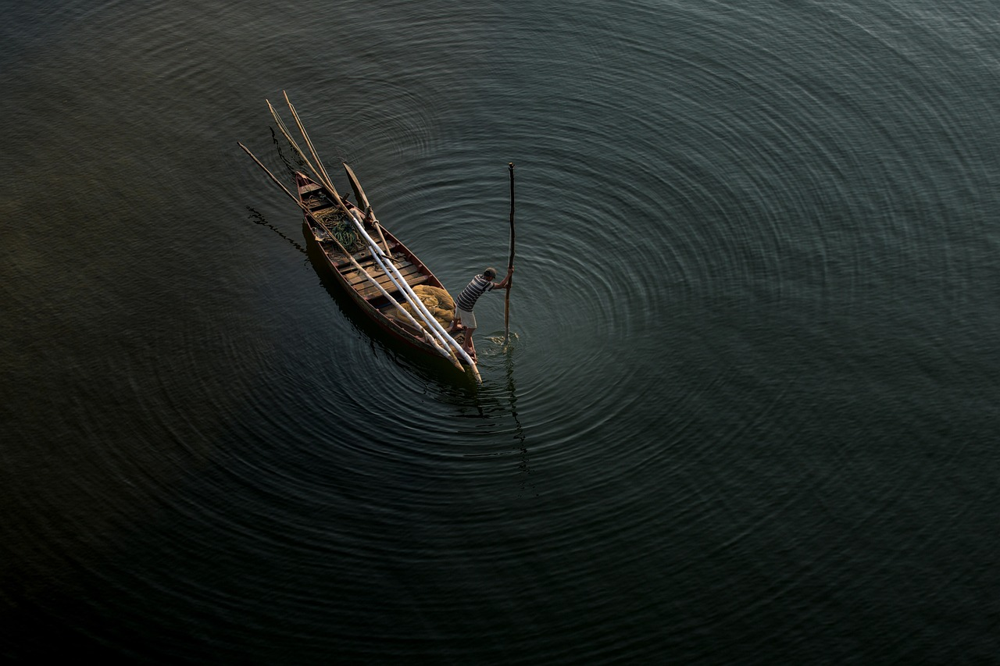 |
| 14.C |
Implement and Enforce International Sea Law
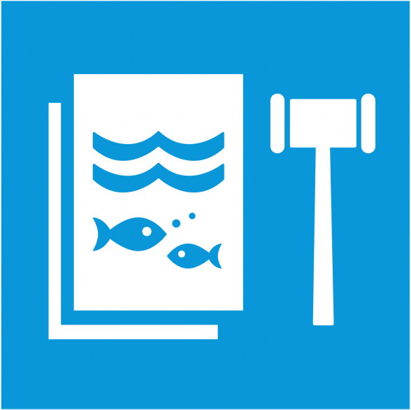
Legal Protections may be enacted by enforcement is just as important
|
Enhance the conservation and sustainable use of oceans and their resources by implementing international law as reflected in UNCLOS, which provides the legal framework for the conservation and sustainable use of oceans and their resources | Develop international agreements and enhance enforcement mechanisms | Number of countries making progress in ratifying, accepting and implementing through legal, policy and institutional frameworks, ocean-related instruments that implement international law, as reflected in the United Nation Convention on the Law of the Sea, for the conservation and sustainable use of the oceans and their resources |